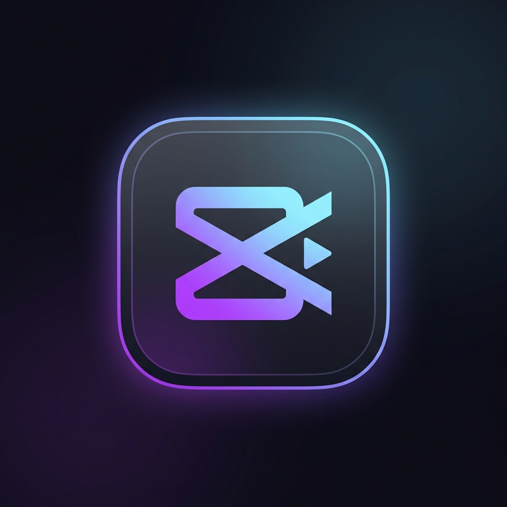
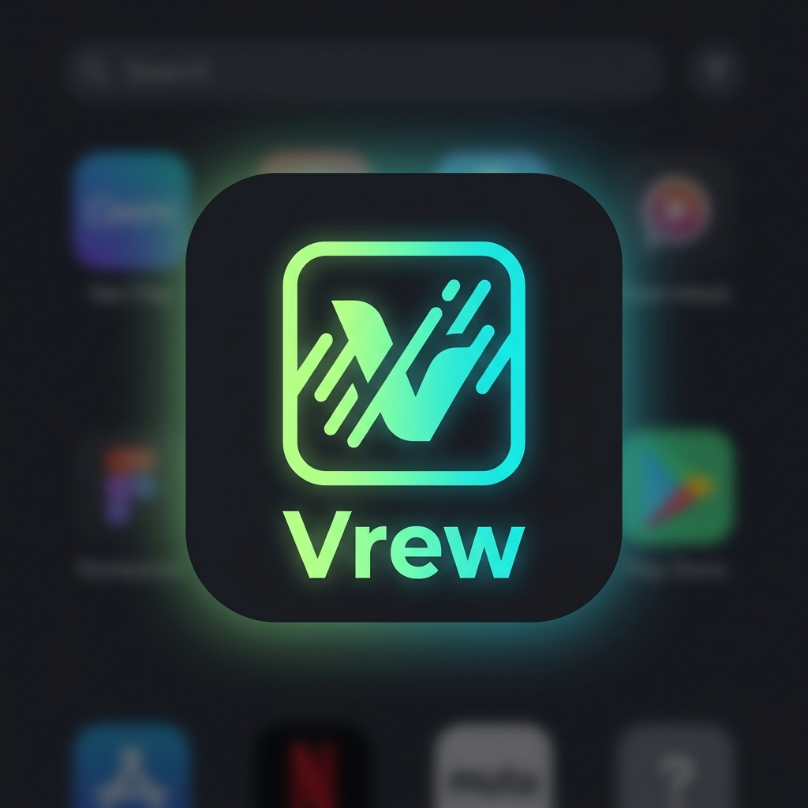
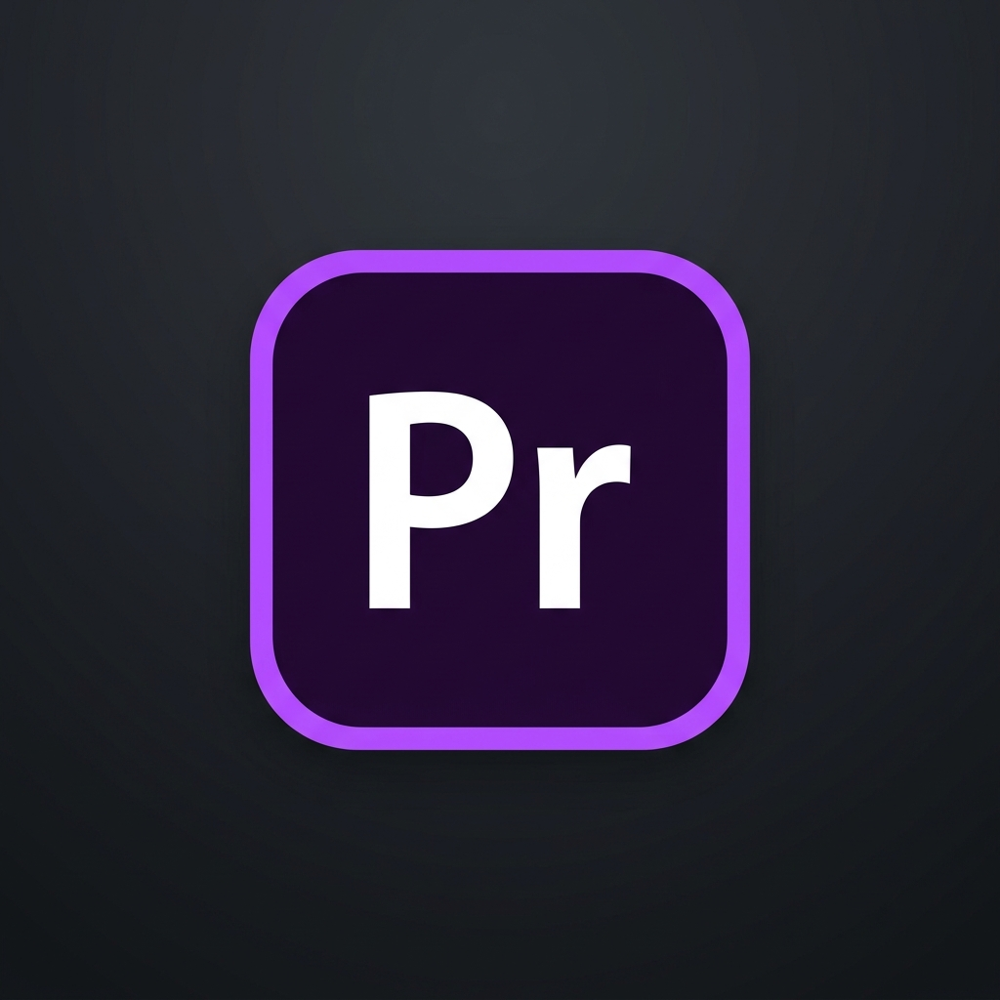
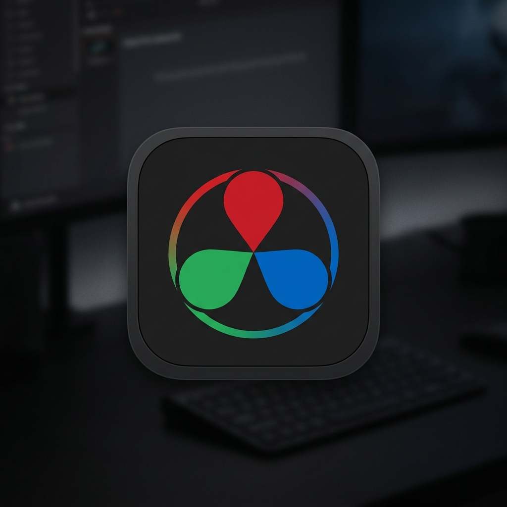

3. 편집 프로그램의 종류와 특징
초보자부터 1인 크리에이터까지 숏폼, 롱폼 영상을 신속하게 연출할 수 있는 CapCut과 Vrew의 강력한 AI 편의 기능입니다.
CapCut - 마케팅 편집 최강 툴
- 기본 제공 리소스의 풍부함: 저작권 걱정 없는 BGM, 화면 전환 효과(Transition), 다양한 템플릿, 스티커 등이 기본 제공되어 고효율 제작이 가능합니다.
- AI 자동 자막(Speech-to-Text): 한국어 및 외국어 오디오 음성을 98% 정확도로 빠르게 자동 추출하여 예쁜 자막 레이아웃으로 입혀줍니다.
- AI 배경 제거 및 트래킹: 복잡한 크로마키 세팅 없이도 인물 배경을 원클릭으로 없애고 피사체 동작을 자동으로 추적해 스티커 등을 부착해줍니다.
Vrew - AI 기반 텍스트 편집 툴
- 텍스트 기반 문서식 편집: 워드나 아래한글 문서를 편집하듯 영상 속 음성을 텍스트로 보며 지우거나 옮기는 혁신적인 컷편집 방식입니다.
- AI 목소리 및 대본 자동 생성: 텍스트 대본만 입력하면 자연스러운 AI 보이스(TTS)로 내레이션을 즉시 만들고 그에 어울리는 이미지/비디오를 자동 매핑합니다.
- 빠른 자동 자막 추출: 음성 분석을 통해 자막 싱크를 완벽히 맞추고 번역 자막까지 원클릭으로 생성하여 숏폼 마케팅 효율을 대폭 올립니다.
3. 편집 프로그램의 종류와 특징
비디오 마케터로서 편집 범위와 예산 요구치에 적합한 영상 편집 프로그램 비교 가이드입니다.
주요 영상 편집 프로그램 스펙 분석
| 프로그램명 | 특장점 | 단점 | 권장 사양 | 타겟 추천 |
|---|---|---|---|---|
|
 CapCut |
자동자막, 템플릿, 모바일 연동 및 사용성 최상 | 정밀 오디오 싱크 및 3D 그래픽 보정 한계, 프로 기능 결제 유도 | FHD 편집: 중간급 사양 | 마케터, 소상공인, 초보자 |
|
 Vrew |
텍스트 문서 편집 방식 컷편집, AI 목소리 생성 및 고속 자동 자막 | 멀티트랙 레이어 부재, 섬세한 효과음 및 프레임별 화면 전환 불가 | 웹/가벼운 설치형: 저사양 PC 가능 | 빠른 쇼츠 제작자, 대본 위주 영상 편집 마케터 |
|
 Premiere Pro |
업계 표준, 풍부한 연동성, 고차원 자막 템플릿 | 비싼 구독료(월정액), 잦은 버그 및 크래시, 고사양 PC 사양 요구 | 4K 편집: 16G RAM / 그래픽카드 필수 | 전문 편집자, 대행사 |
|
 DaVinci Resolve |
프로급 색보정, 강력한 오디오 믹싱, 무료 라이선스 | 노드(Node) 방식 이펙트 적용의 높은 진입장벽, 무겁고 복잡한 사용법 | GPU 리소스 요구 수준 매우 높음 | 컬러리스트, 고품질 시네마틱 |